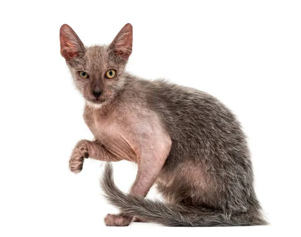
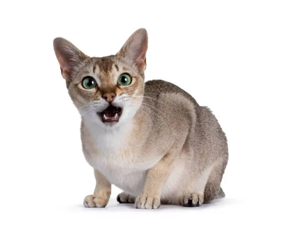
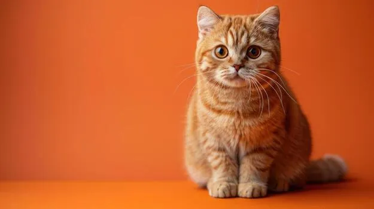

Alguns gatos chamam atenção por suas características incomuns: orelhas
diferentes, pelagens curiosas,
olhos marcantes e até aparências que lembram outros animais!
Prepare-se para conhecer felinos pouco comuns e descobrir o que os torna tão especiais.

Lykoi — O gato lobisomem
Sua aparência lembra a de um pequeno lobisomem!
Possui pelos irregulares, áreas sem pelagem
e olhos marcantes

Khao Manee — O gato dos olhos preciosos
Conhecido pela pelagem branca e pelos olhos que
podem ter cores diferentes, como azul e dourado.

Singapura — O pequeno gigante
Considerado uma das menores raças de gatos domésticos,
possui olhos grandes, corpo delicado e pelagem curta.

Kurilian Bobtail — O gato de cauda diferente
Sua característica mais marcante é a cauda curta e arredondada,
que lembra um pompom. Pode ter pelos curtos ou longos.
Você tem alguma dúvida ou sugestão ou curiosidade sobre o universo felino?
Preencha o formulário abaixo e envie sua mensagem. Será um prazer receber seu contato!
